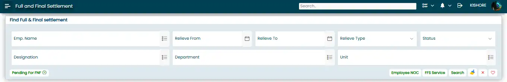
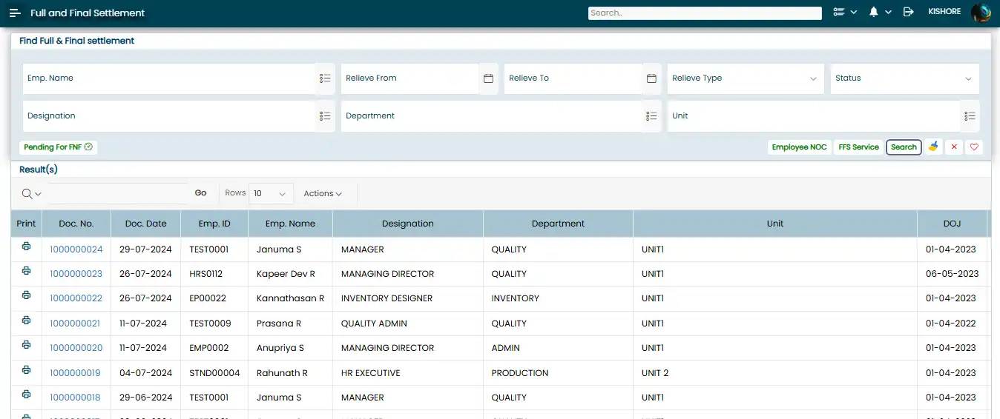
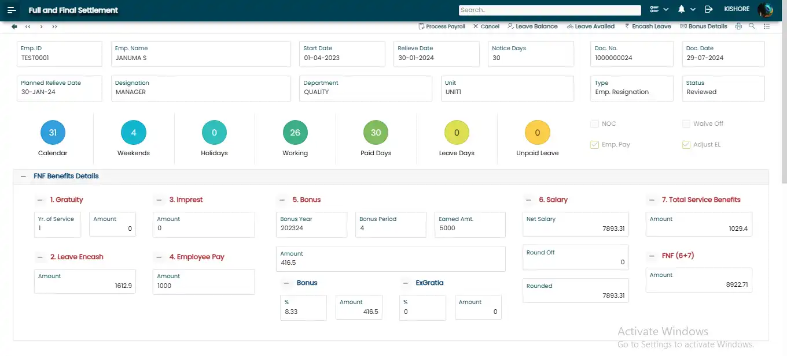
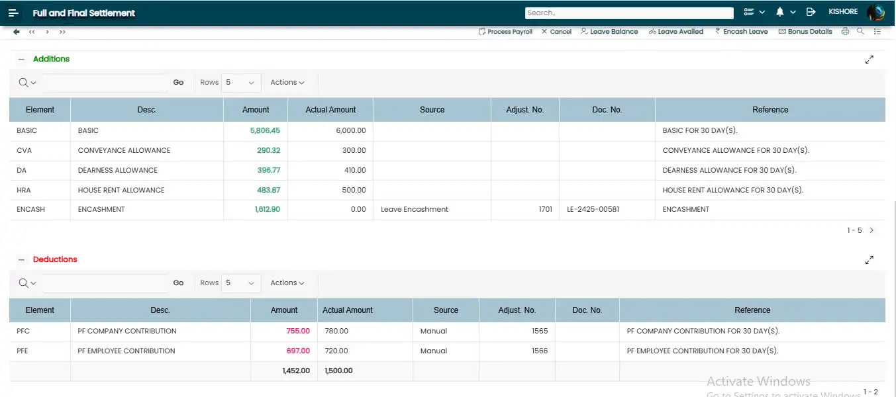

<div data-category="Payroll" data-title="Full and Final Settlement" data-updated="December 01, 2025" data-contributors="RoadmapIT" data-breadcrumb="Home,Payroll,Full and Final Settlement">
  <div class="page-content">
    <p>Full and Final Settlement screen is designed to manage and streamline the process of settling all dues and payments for an employee who is leaving the organization.</p>
    <h5>Navigation path:</h5>
    <p class="fs-6">Payroll \ Transaction \ Resign & FFS \ Full And Final Settlement</p>
    <!-- Full and Final Settlement -->
    <h2>Full and Final Settlement</h2>
    
    <ul style="list-style-type: none; align-content: center">
      <li class="mouse-icon">Search screen displays the list of Employee Termination with the relevant details.</li>
      <li class="mouse-icon">Click on search to filter all the records.</li>
    </ul>
    
    <ul style="list-style-type: none; align-content: center">
      <li class="mouse-icon">User can filter the respective documents by entering the search parameters at the header.</li>
      <li class="mouse-icon">Using search, system displays the results relevant to the search parameters entered.</li>
      <li class="mouse-icon">On-click, the corresponding transaction record will be displayed.</li>
      <li class="mouse-icon">
        Using
        
        icon, entered search parameters can be cleared.
      </li>
      <li class="mouse-icon">
        To close the screen, use
        <i class="bi bi-x fs-4 mx-2 text-danger"></i>
        icon.
      </li>
      <li class="mouse-icon">
        By clicking the
        <i class="bi bi-plus fs-4 mx-2 text-primary"></i>
        Add button user can create a new document.
      </li>
    </ul>
    
    <!-- Bonus -->
    <h2>Bonus:</h2>
    <ul style="list-style-type: none; align-content: center">
      <li class="mouse-icon">Select the Bonus Year, Period.</li>
      <li class="mouse-icon">Enter the Earned amount.</li>
      <li class="mouse-icon">Based on Transaction: Gratuity, Leave encashment, Imprest, Employee pay, Salary. Total Service benefits FNF will be fetched automatically.</li>
      <li class="mouse-icon">Verify Additions and deductions.</li>
    </ul>
    
    <ul style="list-style-type: none; align-content: center">
      <li class="mouse-icon">Click Process Payroll button.</li>
    </ul>
  </div>
</div>
